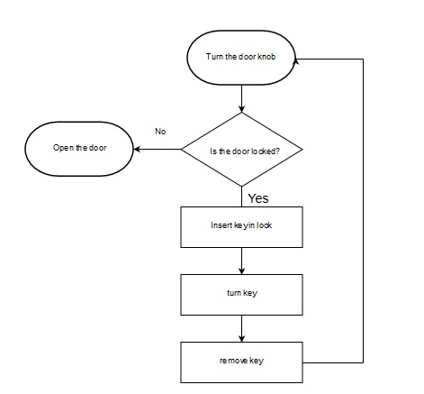
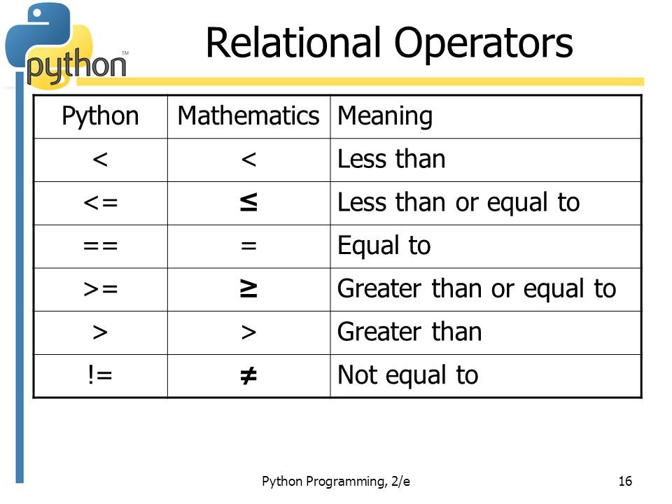
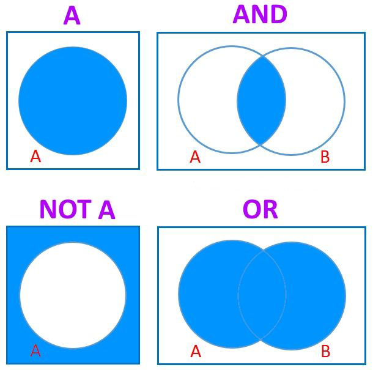

Notes partially adapted from
Chapter 5: If Statements - Conditional Tests, Python Crash Course, Eric Matthes, 2016
Chapter 11 - Conditional Branching, Introduction to Creative Computing, Jeff Long, 2016
You may remember that we previously learned that control statements are algorithm that tell us under what conditions certain other actions should be carried out. For example:
try turning doorknob
if the door is locked:insert key into lockturn knob and open door
turn key
remove key from lock
If the door is unlocked, the part of the algorithm where the door is unlocked is skipped and it does straight to opening the door. Because the writer of the algorithm does not know if the door is locked or not, they have to consider all situations or conditions that someone could come across. This is called conditional branching, because depending on certain conditions, different branches of the algorithm will be followed when it is executed.
We evaluate a conditional statement as either True or False - you may recall that this is Boolean data. Consider the doorknob example again:

You can see at the question "Is the door locked?" that the algorithm branches off into two choices: Yes or No (True or False could also be in place). Programming languages like Python use True or False to tell us if a condition satisfies a specified relationship.
Relational operators are symbols that show how data is connected to each other. Here are a list of the relational operators and how they are written in Python and in Mathematics:

source: “Comparing Values.”(Image), Medium, Intro to Programming, 14 Feb. 2018, medium.com/mslim/comparing-values-407c7bdc1fa1
You will notice that comparing if two values are equal uses two equal signs ==. This is because when we use a single equal sign = that means that I am assigning a value to data. For example:
Example #1
Here are some additional examples of using Python to check if a Boolean statements is True or False.
Example #2
Example #3
Example #4
When checking string values, the case of the letters matter.
Example #5
We can also check for inequality.
Checking the validity of multiple statements in Python is much easier than some other programming languages because it uses English statements rather than symbols.
If we want to test if two or more conditions are met simultaneously, we use the word and. If we want to test if either of two or more conditions are met simultaneously, we use the word or.

Example #6
Example #7
Practice #1
Create your own Boolean statement using any relational operator.
Practice #2
Create your own Boolean statement showing inequality.
Practice #3
Create your own False Boolean statement using >= or <=.
Practice #4
Create multiple Boolean statements and test if their conditions are met simultaneously.
Practice #5
Create two Boolean statements and test if all conditions are met simultaneously.
Practice #6
Create two Boolean statements and test if either conditions are met.